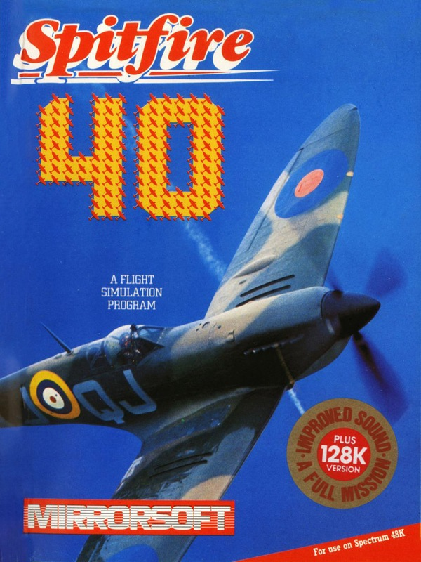
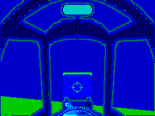
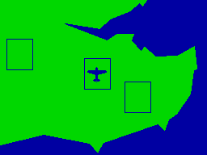
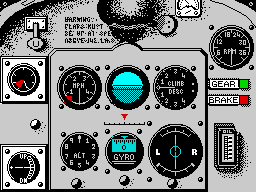

Spitfire 40


{kind=link}

| Publisher: | Mirrorsoft |
| Price: | £9.95 |
| Year: | 1985 |
| Source: | CRASH, Issue 26 |

Mirrorsoft’s latest release allows you to take to the skies in the cockpit of a World War II aeroplane — the Spitfire, in case there’s any doubt remaining! The game first appeared on the Commodore, nearly a year ago, and has now been launched on the Spectrum. It’s the summer of 1940, and you’ve just been posted to a Spitfire squadron — a whole world of adventure is about to open up before you...
At the start of a session in the air you have to load a flying Log into the program — you can choose one of the pilots presented on screen or load in details of your own experience if you’ve already got some flying time in. The next task is to select which of the three modes you wish to use, choosing between Practice, Combat and Combat Practice. Practice puts you on the runway and gives you the opportunity to get to know the feel of the plane by allowing you to take off, fly around and land. In this mode there are no enemies present — it’s very much a case of having the ‘L’ plates on.

The runway appears through the cockpit
window
The two combat modes pit you against enemy fighters. Combat Practice puts you in the air directly behind an enemy aircraft, and you can practise your gunnery technique. After a couple of enemy fighters have been destroyed, the opposition starts to get smart, behaving more like they would in a true war situation, twisting and turning to avoid your machine gun fire. Sometimes they loop the loop and end up on your tail and start machine gunning you! You’re alerted to an enemy behind you by the plane appearing in your rear mirror — a nice feature which adds realism to the simulator.
True Combat mode puts you in an ongoing war situation. Starting on the airstrip you have to take off, find the enemy using the map, and fly the Spitfire for real, engaging the German pilots in dogfights. Once you have intercepted and shot down the enemy intruders you have to return to the airstrip and land safely. If the mission is a successful one then you can save your experiences to tape as a Log before going out on another interception run. The Log can then be reloaded as a flight history the next time you decide to take to the skies.
This Air-ace simulation features two separate screens, the view from the cockpit and the instrument panel, which have to be used in conjunction to fly the plane — a press on the space bar toggles between the two displays. A map screen can be referred to while you’re flying to help you find the current position of the enemy planes. The main map shows the South East of England with your plane marked in red and enemy fighters in black. If your Spitfire is inside one of the three squares drawn on this map, you can examine the ground below you in greater detail by pressing the N key.

The map screen — there’s no enemy planes
out to play today!
The game can be controlled entirely from the keyboard or from keyboard and joystick, in which case your joystick controls the Spitfire’s ailerons and elevators, mirroring the stick displayed on-screen, and key-presses are required to activate other controls such as landing gear, throttle and rudder.
The instruction booklet contains all you need to know about flying the Spitfire in the game, and offers a fair few tips and hints on techniques for survival in the air. There’s also a potted history of the Spitfire itself, and a brief introduction to the theory of flight as well as a short section on aerobatic manoeuvers.
If you do well then promotion is awarded according to your flying experience and the number of kills you achieve. If you do really well it is possible to rise through the ranks rapidly. Who knows? You could become a Group Captain with a string of medals including the VC, DSO, and DEC. Then you’d be ready for Mirrorsoft’s next release... a game all about that famous Ace, Biggles!
CRITICISM

“Fast, fun and playable are just some of the great things about Spitfire 40. Zooming around the screens... er sorry, skies, and blowing up all the enemy planes in sight is a challenge. The best simulation in years, with detailed screens, and great mobility as planes come up behind you. To start the plane at first was a bit hard, but as I got into it the problems were quickly overcome. Once I’d taken off, flying above the ground twisting and turning was great fun — an exciting game. If you get bored with trying to be an air combat hero, you can always try landing for another medal... Overall, a truly brilliant simulation.”
“Bang on, Whizzo and Chocks Away — a great game! The instruction booklet supplied gives excellent details on all the aerobatic and combat manoeuvres you can perform. Despite the fact that I’ve never flown a Spitfire (!), I think I can safely say this is a pretty accurate simulation, considering the limitations. The facilities for combat and combat practice are very useful, as is the save game facility allowing you to build up a record of missions. The graphics are excellent, but the explosions could have been a bit more realistic. The plethora (LMLWD) of control keys may be a bit daunting at first, but once you get into the feel of it, it’s great. I doubt that this will appeal much to those who are opposed to flight simulators, but if you’re not one of them, get Spitfire 40 — there’s a good arcade element in there too.”
“Well, I suppose the Spectrum version had to come eventually. Mirrorsoft have certainly done themselves proud, with one of the best flying simulators on the Spectrum to date. The most pleasing part of this flying simulator is that the cockpit is simple and only contains the essentials. The flip/full screen option between the cockpit and instrument panel is put to good effect, and adds to the panic realism when getting into a good old fashioned dogfight. Perhaps a little more effort could have been put into the front end of the game, maybe using more colour or a redefined character set, but it does contain some good options, like saving a log book and choosing a Spectrum Plus or Minus set up. The thing that swung the balance away from the years old Fighter Pilot is that Spitfire 40 allows the player to fly in a more competitive situation, with better confrontations with other planes — this is mainly due to the choice of the old Spitfire over the modern jet plane. Spitfire 40 is definitely the game to be bought now if you want a flying simulator.”
COMMENTS
| Control keys: | Spitfire Joystick: P up, L down, A left, S right, SHIFT or ; to fire. Z/X rudder left/right, Q/W increase/decrease power, F flaps, G landing gear, B brakes, M and N map control, SPACE to toggle between screens |
| Joystick: | Kempston, Cursor, Interface 2 |
| Keyboard play: | Fine, once you get used to the controls |
| Use of colour: | Tasteful |
| Graphics: | Very fast and realistic, excellent instruments |
| Sound: | Mainly engine noise and firing |
| Skill levels: | One |
| Screens: | Two, plus maps and menus |
| General rating: | An excellent simulation which should appeal to arcade players too. |
| Use of computer: | 90% |
| Graphics: | 91% |
| Playability: | 88% |
| Getting started: | 93% |
| Addictive qualities: | 91% |
| Value for money: | 91% |
| Overall: | 90% |